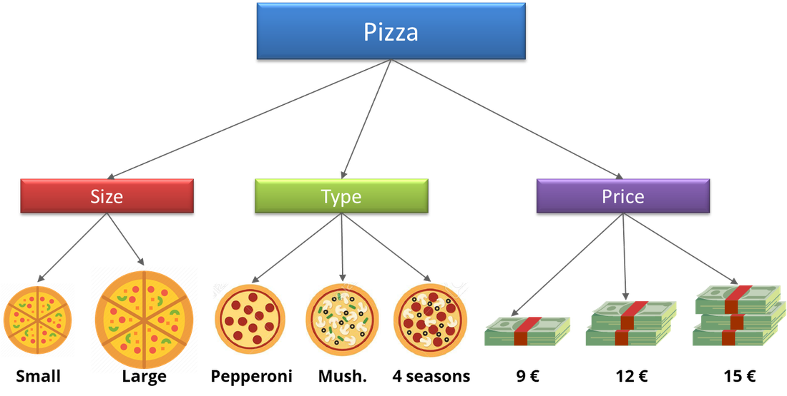
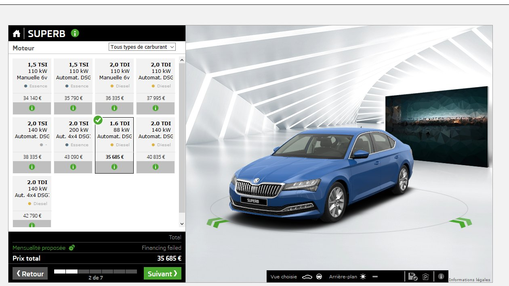
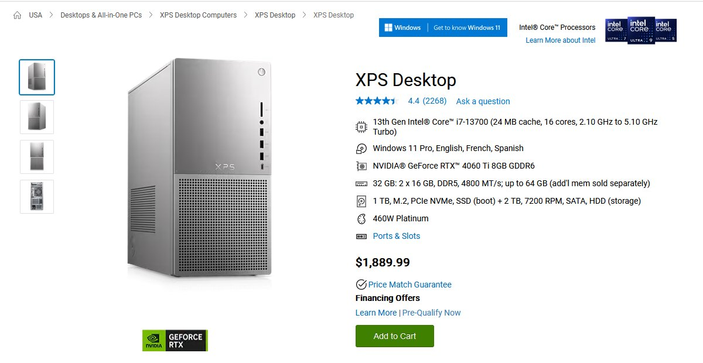
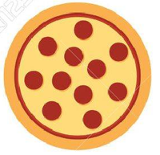
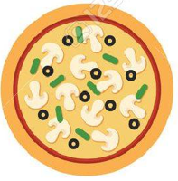
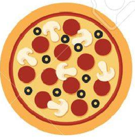

AIDAMS · Marketing Analytics
Session 6
Conjoint Analysis
Review last session
We discussed the following topics in the last session
- Overview of promotions: retail and trade promotions, purchase acceleration, the planning process
- BDI/CDI analysis to compare brand and category strength across markets
- ROI and lift factors
- Baseline sales and lift factors — simple averages and weighted baselines
- Lift factors from log-linear regressions with display and feature
- Sales prediction from log-linear demand models
- Economics of trade promotions: forward buying and seasonality · Assignment 4
Today’s agenda
I · Conjoint analysis
Attributes, levels and partworths · estimating preferences with regression · from preferences to choices
II · Running simulations
Market shares for new products, new entrants and cannibalization · running a conjoint study
III · Segmentation with conjoint
Individual-level partworths · clustering consumers by preferences
IV · In-class game: Dream Destinations
A multiplayer game using conjoint analysis and the Enginius platform
- ESSEC is planning a 3-day trip in June
- Friday 8 AM – Sunday 8 PM
- All expenses are covered by ESSEC
- You are asked to give your opinion about possible trips
- Each trip is made of five components: destination, travel vehicle, accommodation, meal plan, and extras
The components of the trip
Five attributes — each click opens the next one
Managerial issues
Managerial issues we will address today:
- How to understand and quantify what consumers value, like, dislike and prefer?
- How to link consumers’ preferences to consumers’ choices?
- How to evaluate potential market shares of new product offerings, and product cannibalization?
- How to identify market opportunities for new product offerings?
- How to segment customers based on their choices?
Products, attributes, and attribute levels
A product is described by attributes; each attribute takes one of several levels

Examples of attributes and levels
Color
- Red
- Blue
- Green
- Black
Warranty
- No warranty
- 1-year warranty
- 3-year warranty
Number of stops
- Non-stop flight
- 1 stop
- 2 stops or more
Meat cooking
- Rare
- Medium-rare
- Medium
- Well done
Discuss: what are some other attributes? Can the number of reviews or the star rating be an attribute?
Attributes and levels in the wild
Product configurators are attributes and levels made visible

Car configurator: engine is an attribute, each engine option a level

Computer: processor, graphics, memory, storage… and price
Products are bundles of attribute levels
- A product is simply a bundle of attribute levels
| Pizza | Size | Type | Price |
|---|---|---|---|
| 1 | Small | Pepperoni | 9 € |
| 2 | Large | Mushroom | 15 € |
| 3 | Small | 4 seasons | 12 € |
| … | … | … | … |
2 × 3 × 3 = 18 different pizzas (and nothing more!)
Question: how many dream destinations do we have?
4 × 3 × 4 × 4 × 4 = 768 different trips
Preference partworths
- A value — the partworth — is associated with each level to indicate preference
- Values can be different for different people, but we work with averages
Size
Type

Pepperoni40
Mushroom0
4 seasons30Price
From preference partworths to product preferences
The preference score for a product is the sum of the partworths of its levels
| Pizza | Size | Type | Price | Preference score |
|---|---|---|---|---|
| 1 | Large (10) | Pepperoni (40) | 9 € (50) | 100 |
| 2 | Small (0) | 4 seasons (30) | 12 € (30) | 60 |
| 3 | Small (0) | Mushroom (0) | 15 € (0) | 0 |
Since pizza 1 is preferred to pizza 2, it is “more likely” to be purchased. Later, we will see exactly how preferences are translated into choices.
Try it: build a pizza
Average partworths from the previous slide. Which pizza scores 100? Which one scores 0?
Comments
- For simplicity, preferences for products are scaled between 0 and 100
- Worst levels = 0
- Sum of most preferred levels = 100
- (done automatically by the software)
- Of course, people prefer to pay less!
- What is important is how strong these preferences for low prices are, compared to preferences for other attributes
- Preferences vary across customers
- Later, we will see that customers can be segmented based on their preference partworths, to build segments of customers who share similar preferences
Preference partworth estimation
- The question then becomes: how do we estimate these preference partworths?
- You can’t ask → not reliable
- You have to estimate them indirectly through
Estimating partworths with conjoint: the steps
1Generate profiles
- Create a list of products to evaluate
- Also called bundles or profiles
2Collect ratings
- Respondents rate each profile on a scale
- Also called preference scores
3Run a regression
- Regress the ratings on the attribute levels
- The coefficients are the partworths
Then we use the partworths: from preferences to choices, simulations, and segmentation.
Step 1: profile generation
- Create a list of products
- Also referred to as bundles or profiles
- Each profile combines one level of every attribute
Pepperoni
12 €
Mushroom
15 €
Four seasons
9 €
Step 2: rating
- Ask respondents to rate the profiles on a scale (e.g., 0–100, 1–10)
- Also referred to as preference scores
Pepperoni
12 €
Mushroom
15 €
Four seasons
9 €
Step 3: regression analysis
Run a regression to estimate each attribute level’s contribution to the overall preference score
| Small | Large | Pepperoni | Mushroom | 4 seasons | 9 € | 12 € | 15 € | Score | |
|---|---|---|---|---|---|---|---|---|---|
| \(X_1\) | \(X_2\) | \(X_3\) | \(X_4\) | \(X_5\) | \(X_6\) | \(X_7\) | \(X_8\) | \(y\) | |
| Profile 1 | 0 | 1 | 1 | 0 | 0 | 1 | 0 | 0 | 100 |
| Profile 2 | 1 | 0 | 0 | 0 | 1 | 0 | 1 | 0 | 60 |
| Profile 3 | 1 | 0 | 0 | 1 | 0 | 0 | 0 | 1 | 45 |
| Profile 4 | 0 | 1 | 1 | 0 | 0 | 0 | 1 | 0 | 80 |
| … | … | … | |||||||
- \(X_j\): is this attribute level present in that profile? 1 = yes, 0 = no
- \(\beta_j\): the contribution of that attribute level to the overall score — the partworth
- Can we estimate this without a regression?
Try it: estimate partworths from your ratings
| # | Size | Type | Price | Your rating |
|---|
| Attribute | Level | \(\hat\beta\) | Partworth (0–100) |
|---|
Attribute importance = range of partworths ÷ sum of ranges
Nine of the 18 possible pizzas. Base levels (Small, Pepperoni, 9 €) have \(\hat\beta = 0\). Change the ratings and watch the partworths update.
Choice-based conjoint
- Choice-based conjoint is another way to estimate preference partworths
- Full-profile conjoint → linear regression on ratings
- Choice-based conjoint → binary (logit) regression on choices
From preferences to choices
How do we go from preferences to choices?
Three products have preference scores 70, 20 and 10. What do you think their market shares would be?
The choice rule depends on the context:
| Decision context | Choice rule |
|---|---|
| High-stake decision (a house, a car) | First choice |
| High variety seeking (meals) | Share of preference |
| In-between (clothes) | Logit |
Try it: choice rules and market shares
\(\beta = 0\): logit becomes random choice. Large \(\beta\): logit approaches first choice.
| First choice | Logit | Share of preference | Random |
|---|
Same preferences, very different market shares: the choice rule is a modeling decision.
The alpha rule
- Use it when today’s market shares are known
- Pick \(\alpha\) so the simulated shares match today’s market
- Then use that \(\alpha\) for the simulations
Scores 70 / 20 / 10 · observed shares 60% / 25% / 15%
| \(\alpha\) | A | B | C |
|---|---|---|---|
| 0 (random) | 33% | 33% | 33% |
| 0.7 | 60% | 25% | 15% |
| 1 (share of pref.) | 70% | 20% | 10% |
| 5 (≈ first choice) | 100% | 0% | 0% |
\(\alpha \approx 0.7\) matches today’s market.
Running simulations
Once you have…
- Defined attributes and levels
- Collected data (ratings) from a sample of your target customers
- Estimated preferences
- Linked preferences to choices
…you can simulate market shares if
- You increase price? Change the characteristics of a product?
- You introduce a new product?
- Competition introduces a new product?
- Are there opportunities to introduce new products? Which ones?
- Cannibalization? Etc.
Simulation example #1: changing an existing product
People prefer planes to buses. Let’s offer profile #3 by plane, and slightly increase its price to cover the additional costs
Current market
| Profile | Preference score | Market share |
|---|---|---|
| Beach, 800 € by plane | 45 | 31% |
| Beach, 600 € by bus | 40 | 26% |
| #3 Mountain, 450 € by bus | 55 | 42% |
After the change
| Profile | Preference score | Market share | Delta |
|---|---|---|---|
| Beach, 800 € by plane | 45 | 35% | +4% |
| Beach, 600 € by bus | 40 | 30% | +3% |
| #3 Mountain, 600 €, plane | 45 | 35% | −7% |
The price increase outweighs the gain from flying: profile #3 loses share.
Simulation example #2: a new entrant
What if a low-cost company entered the market?
Current market
| Profile | Preference score | Market share |
|---|---|---|
| Beach, 800 € by plane | 45 | 31% |
| Beach, 600 € by bus | 40 | 26% |
| Mountain, 450 € by bus | 55 | 42% |
With the low-cost entrant
| Profile | Preference score | Market share | Delta |
|---|---|---|---|
| Beach, 800 € by plane | 45 | 15% | −16% |
| Beach, 600 € by bus | 40 | 13% | −13% |
| Mountain, 450 € by bus | 55 | 21% | −22% |
| Beach, 450 € by plane | 100 | 51% | +51% |
Note: if the third product (Mountain, 450 €, by bus) is offered by the same company as the new one, there is significant cannibalization.
Running a conjoint study
- Select relevant attributes
- Select relevant levels for each attribute
- Develop the product bundles to be evaluated
- Collect data
- Estimate preference partworths (regression)
- From preferences to choices: choice rule
- Run simulations (market shares, new products)
- Segment customers based on preferences
Stage 1: design the conjoint study
1Select attributes
- Ask consumers, managers, experts
- Analyze secondary sources (public media, brochures)
- Select 4 to 6 attributes maximum
2Select levels
- Ask managers, experts (product managers, manufacturers)
- Analyze secondary sources
- Be realistic; try to span all options present in the market
- Select 2 to 4 levels maximum per attribute
- (Try to) include the same number of levels for each attribute
3Develop bundles
- Let the software decide
- How would a code optimize the selected bundles?
- If some profiles do not make sense, review your design
Stage 2: collect data and estimate preferences
- Collect data
- Develop a survey
- Select a sample of respondents
- Collect data
- Estimate preference partworths (regression)
- Run a regression analysis on the collected data
Beach
450 €
Stage 3: exploit the results
- From preferences to choices: choice rule
- Which choice rule? (first choice, share of preference, etc.)
- Run simulations (market shares, new products)
- Replicate the existing market
- Select scenarios (new product, new entrant, changes)
- Run simulations
- Segment customers based on preferences
- Preferences are heterogeneous in the population
- Regrouping similar customers might lead to great insights
- A new offering might have low global market share, but dominate a specific niche or segment (e.g., those who hate flying)
Connecting the dots: preferences and segments
- How can segmentation and conjoint analysis be connected?
Today
Conjoint analysis
Measures what each person values: their partworths for every attribute level
Session 1
Segmentation
Puts people with the same needs and preferences in the same bucket
Next
Preference-based segments
Segment people directly on their measured preferences
- What are the pros of this method for segmentation compared to directly asking about preferences?
Segmentation using conjoint analysis
Why segmentation?
- Average partworths hide important differences across consumers
- Different consumers value different attributes
Key idea
- Run the regression for each respondent separately
- Each person gets their own set of coefficients (partworths)
- Use these individual-level coefficients to group similar consumers
Result
- Segments of consumers who share similar preferences
- Each segment may prefer a very different product
Individual-level regression coefficients
- In full-profile conjoint, we can run a regression per individual
- Each individual \(i\) gets their own coefficients \(\beta_{i1}, \beta_{i2}, \dots, \beta_{ik}\)
- Example: pizza conjoint with 3 respondents
| Size | Type | Price | Interpretation | |||||
|---|---|---|---|---|---|---|---|---|
| Large | Pepperoni | Mush. | 4 seasons | 9 € | 12 € | 15 € | ||
| Person 1 | 10 | 40 | 0 | 30 | 50 | 30 | 0 | Strong preference for pepperoni and low price |
| Person 2 | 40 | 5 | 35 | 10 | 20 | 15 | 0 | Cares most about size, likes mushroom |
| Person 3 | 5 | 10 | 0 | 45 | 50 | 35 | 0 | Prefers 4 seasons pizza, very price sensitive |
From individual coefficients to segments
1Collect individual partworths
- Run a regression for each respondent
- Create a matrix: rows = individuals, columns = partworths
2Apply a clustering algorithm
- Use k-means or dimension reduction on the partworth matrix
- The algorithm groups individuals with similar preference patterns
- Choose the number of segments (k) based on fit and interpretability
3Profile each segment
- Compute average partworths within each segment
- Interpret what each segment values most
- Size each segment (what % of the market?)
Segment profiles: pizza example
Flavor lovers
- High partworth for pepperoni and 4 seasons
- Moderate price sensitivity
- Do not care much about size
Value seekers
- Highest partworth for low price (9 €)
- Prefer large size
- Relatively indifferent to pizza type
Gourmet enthusiasts
- Strong preference for 4 seasons
- Willing to pay premium prices
- Prefer large size
Limitations of conjoint analysis
- Preferences are not a linear sum
- Camping + mountains: extra fun
- Camping + London: not so fun!
- Linear combinations are not flexible enough
- We can add interaction terms to the regression
- Instead of only summing attributes, add attribute combinations
- Converting scores to market shares might not make sense
Stage 2: now build teams
- Create teams of 4 — but first, think about teams
- Do you want to make a team with your friends or with strangers?
- What are the pros and cons of each?
- Now look at the sheets to see how much each feature costs
- You can create a bundle by spending at most 8 stars
- Write down the bundle you think people would prefer the most
Goal: predict the most popular bundle. All the members of the winning team receive a silver coin!
Final round
- Download the shared Excel file and use Python to analyze the data
- Find out which attributes are important for students — and which level within each attribute
- Then run a segmentation analysis
- How many segments do we need?
- What segments are out there? Which segment do you belong to?
- Redesign and suggest a new bundle
- Groups usually go for the bundle that is best on average
- If multiple groups offer the same bundle, they share the market
- There is a little bit of game theory involved here
- Groups usually go for the bundle that is best on average
- Try to share interesting facts from the data as you are analyzing to earn coins!
Goal: the team with the highest market share wins the game. First team receives a gold coin 🥇, second a silver coin 🥈, and third a bronze coin 🥉.
Our data
What matters most when choosing a trip?
Importance = range of a person’s partworths for that attribute ÷ sum of their ranges, averaged over respondents.
Which levels do people like?
Average partworths in rating points (1–7 scale), relative to the attribute average. Green = liked more than average, orange = liked less.
How many segments?
Elbow method: k-means on each person’s partworths, for k = 1 to 8
Within-segment sum of squares (lower = tighter segments)
What does each segment want?
Average partworths per segment (rating points vs. the attribute average). Outlined cells are each segment’s favourite level. Change k on the previous slide.
Score simulator: rate your bundle
Prediction = each person’s own regression applied to the bundle, averaged over everyone (and within each segment).